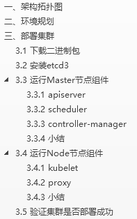
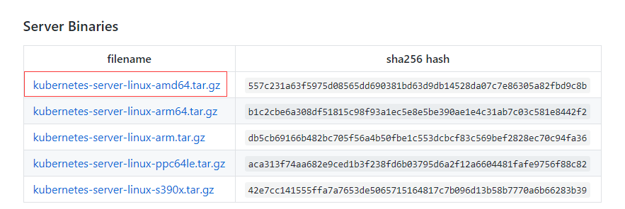
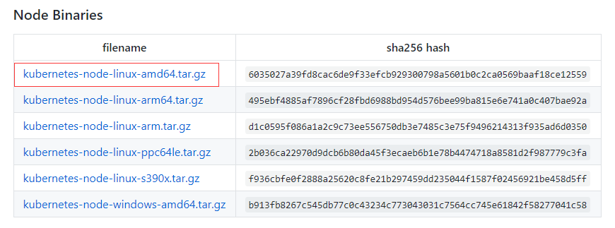

Kubernetes(K8S)集群管理Docker容器（部署篇）
Kubernetes(K8S)集群管理Docker容器（部署篇）
今天这篇文章教给大家如何快速部署一套Kubernetes集群。K8S集群部署有几种方式：kubeadm、minikube和二进制包。前两者属于自动部署，简化部署操作，并且minikube只是单机测试，而kubeadm还是beta版，强烈推荐初学者使用二进制包部署，因为自动部署屏蔽了很多细节，使得对各个模块感知很少，非常不利用学习。
所以，这篇文章也是使用二进制包部署Kubernetes集群。
本章目录

一、架构拓扑图

二、环境规划

环境说明：
操作系统：Ubuntu16.04 or CentOS7
Kubernetes版本：v1.8.3
Docker版本：v17.09-ce
均采用当前最新稳定版本。
关闭selinux。
三、部署集群
3.1 下载二进制包
打开下面网址，下载下面两个红色框框的包。
https://github.com/kubernetes/kubernetes/blob/master/CHANGELOG-1.8.md#v183


下载完成后，上传到服务器：
kubernetes-server-linux-amd64.tar.gz上传到master节点。
kubernetes-node-linux-amd64.tar.gz 上传到node节点。
3.2 安装etcd3
k8s-master# yum install etcd –y
k8s-master# vi /etc/etcd/etcd.conf
ETCD_NAME="default"
ETCD_DATA_DIR="/var/lib/etcd/default"
ETCD_LISTEN_CLIENT_URLS="http://0.0.0.0:2379"
ETCD_ADVERTISE_CLIENT_URLS=http://0.0.0.0:2379
k8s-master# systemctl enable etcd
k8s-master# systemctl start etcd 注意：Ubuntu系统etcd配置文件在/etc/default/etcd。
3.3 运行Master节点组件
k8s-master# tar zxvf kubernetes-server-linux-amd64.tar.gz
k8s-master# mkdir -p /opt/kubernetes/{bin,cfg}
k8s-master# mv kubernetes/server/bin/{kube-apiserver,kube-scheduler,kube-controller-manager,kubectl} /opt/kubernetes/bin
3.3.1 apiserver
创建配置文件：
# vi /opt/kubernetes/cfg/kube-apiserver
# 启用日志标准错误
KUBE_LOGTOSTDERR="--logtostderr=true"
# 日志级别
KUBE_LOG_LEVEL="--v=4"
# Etcd服务地址
KUBE_ETCD_SERVERS="--etcd-servers=http://192.168.0.211:2379"
# API服务监听地址
KUBE_API_ADDRESS="--insecure-bind-address=0.0.0.0"
# API服务监听端口
KUBE_API_PORT="--insecure-port=8080"
# 对集群中成员提供API服务地址
KUBE_ADVERTISE_ADDR="--advertise-address=192.168.0.211"
# 允许容器请求特权模式，默认false
KUBE_ALLOW_PRIV="--allow-privileged=false"
# 集群分配的IP范围
KUBE_SERVICE_ADDRESSES="--service-cluster-ip-range=10.10.10.0/24"
创建systemd服务文件： # vi /lib/systemd/system/kube-apiserver.service [Unit] Description=Kubernetes API Server Documentation=https://github.com/kubernetes/kubernetes [Service] EnvironmentFile=-/opt/kubernetes/cfg/kube-apiserver #ExecStart=/opt/kubernetes/bin/kube-apiserver ${KUBE_APISERVER_OPTS} ExecStart=/opt/kubernetes/bin/kube-apiserver \ ${KUBE_LOGTOSTDERR} \ ${KUBE_LOG_LEVEL} \ ${KUBE_ETCD_SERVERS} \ ${KUBE_API_ADDRESS} \ ${KUBE_API_PORT} \ ${KUBE_ADVERTISE_ADDR} \ ${KUBE_ALLOW_PRIV} \ ${KUBE_SERVICE_ADDRESSES} Restart=on-failure [Install] WantedBy=multi-user.target 启动服务，并设置开机启动： # systemctl daemon-reload # systemctl enable kube-apiserver # systemctl restart kube-apiserver 注意：apiserver默认支持etcd3，如果是etcd2，需启动时指定版本选项--storage-backend=etcd2 3.3.2 scheduler 创建配置文件： # vi /opt/kubernetes/cfg/kube-scheduler KUBE_LOGTOSTDERR="--logtostderr=true" KUBE_LOG_LEVEL="--v=4" KUBE_MASTER="--master=192.168.0.211:8080" KUBE_LEADER_ELECT="--leader-elect" 创建systemd服务文件： # vi /lib/systemd/system/kube-scheduler.service [Unit] Description=Kubernetes Scheduler Documentation=https://github.com/kubernetes/kubernetes [Service] EnvironmentFile=-/opt/kubernetes/cfg/kube-scheduler ExecStart=/opt/kubernetes/bin/kube-scheduler \ ${KUBE_LOGTOSTDERR} \ ${KUBE_LOG_LEVEL} \ ${KUBE_MASTER} \ ${KUBE_LEADER_ELECT} Restart=on-failure [Install] WantedBy=multi-user.target 启动服务，并设置开机启动： # systemctl daemon-reload # systemctl enable kube-scheduler # systemctl restart kube-scheduler 3.3.3 controller-manager 创建配置文件： # vi /opt/kubernetes/cfg/kube-controller-manager KUBE_LOGTOSTDERR="--logtostderr=true" KUBE_LOG_LEVEL="--v=4" KUBE_MASTER="--master=192.168.0.211:8080" 创建systemd服务文件： # vi /lib/systemd/system/kube-controller-manager.service [Unit] Description=Kubernetes Controller Manager Documentation=https://github.com/kubernetes/kubernetes [Service] EnvironmentFile=-/opt/kubernetes/cfg/kube-controller-manager ExecStart=/opt/kubernetes/bin/kube-controller-manager \ ${KUBE_LOGTOSTDERR} \ ${KUBE_LOG_LEVEL} \ ${KUBE_MASTER} \ ${KUBE_LEADER_ELECT} Restart=on-failure [Install] WantedBy=multi-user.target 启动服务，并设置开机启动： # systemctl daemon-reload # systemctl enable kube-controller-manager # systemctl restart kube-controller-manager 3.3.4 小结 Master节点组件就全部启动了，需要注意的是服务启动顺序有依赖，先启动etcd，再启动apiserver，其他组件无顺序要求。 查看Master节点组件进程状态： 0fd14ce58c9dfe66a4802e64e02aff8b.png 说明组件都在运行。 如果启动失败，请查看启动日志，例如： #journalctl -u kube-apiserver 3.4 运行Node节点组件 k8s-node01# tar zxvf kubernetes-node-linux-amd64.tar.gz k8s-node01# mkdir -p /opt/kubernetes/{bin,cfg} k8s-node01# mv kubernetes/node/bin/{kubelet,kube-proxy} /opt/kubernetes/bin/ 3.4.1 kubelet 创建kubeconfig配置文件： # vi /opt/kubernetes/cfg/kubelet.kubeconfig apiVersion: v1 kind: Config clusters: - cluster: server: http://192.168.0.211:8080 name: local contexts: - context: cluster: local name: local current-context: local kubeconfig文件用于kubelet连接master apiserver。 创建配置文件： # vi /opt/kubernetes/cfg/kubelet # 启用日志标准错误 KUBE_LOGTOSTDERR="--logtostderr=true" # 日志级别 KUBE_LOG_LEVEL="--v=4" # Kubelet服务IP地址 NODE_ADDRESS="--address=192.168.0.212" # Kubelet服务端口 NODE_PORT="--port=10250" # 自定义节点名称 NODE_HOSTNAME="--hostname-override=192.168.0.212" # kubeconfig路径，指定连接API服务器 KUBELET_KUBECONFIG="--kubeconfig=/opt/kubernetes/cfg/kubelet.kubeconfig" # 允许容器请求特权模式，默认false KUBE_ALLOW_PRIV="--allow-privileged=false" # DNS信息 KUBELET_DNS_IP="--cluster-dns=10.10.10.2" KUBELET_DNS_DOMAIN="--cluster-domain=cluster.local" # 禁用使用Swap KUBELET_SWAP="--fail-swap-on=false" 创建systemd服务文件： # vi /lib/systemd/system/kubelet.service [Unit] Description=Kubernetes Kubelet After=docker.service Requires=docker.service [Service] EnvironmentFile=-/opt/kubernetes/cfg/kubelet ExecStart=/opt/kubernetes/bin/kubelet \ ${KUBE_LOGTOSTDERR} \ ${KUBE_LOG_LEVEL} \ ${NODE_ADDRESS} \ ${NODE_PORT} \ ${NODE_HOSTNAME} \ ${KUBELET_KUBECONFIG} \ ${KUBE_ALLOW_PRIV} \ ${KUBELET_DNS_IP} \ ${KUBELET_DNS_DOMAIN} \ ${KUBELET_SWAP} Restart=on-failure KillMode=process [Install] WantedBy=multi-user.target 启动服务，并设置开机启动： # systemctl daemon-reload # systemctl enable kubelet # systemctl restart kubelet 3.4.2 proxy 创建配置文件： # vi /opt/kubernetes/cfg/kube-proxy # 启用日志标准错误 KUBE_LOGTOSTDERR="--logtostderr=true" # 日志级别 KUBE_LOG_LEVEL="--v=4" # 自定义节点名称 NODE_HOSTNAME="--hostname-override=192.168.0.212" # API服务地址 KUBE_MASTER="--master=http://192.168.0.211:8080" 创建systemd服务文件： # vi /lib/systemd/system/kube-proxy.service [Unit] Description=Kubernetes Proxy After=network.target [Service] EnvironmentFile=-/opt/kubernetes/cfg/kube-proxy ExecStart=/opt/kubernetes/bin/kube-proxy \ ${KUBE_LOGTOSTDERR} \ ${KUBE_LOG_LEVEL} \ ${NODE_HOSTNAME} \ ${KUBE_MASTER} Restart=on-failure [Install] WantedBy=multi-user.target 启动服务，并设置开机启动： # systemctl daemon-reload # systemctl enable kube-proxy # systemctl restart kube-proxy 3.4.3 小结 其他节点加入集群与node01方式相同，但需修改kubelet的--address和--hostname-override选项为本机IP。 查看Node节点组件进程状态： 02979dd7adf52d863fbaaf356a421cdf.png 说明组件都在运行。 如果启动失败，请查看启动日志，例如： #journalctl -u kubelet